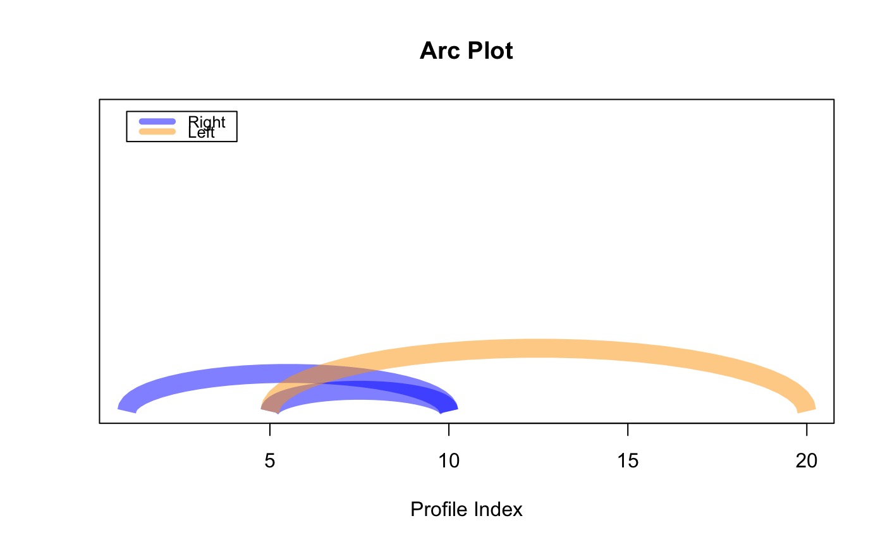

Sometimes may be useful to see where is the nearest neighbor graphically. This is the reasoning behind, for example, FLUSS which uses the arc count to infer a semantic change, and SiMPle which infer that arcs connect similar segments of a music. See details for a deeper explanation how to use this function.
plot_arcs(pairs, alpha = NULL, quality = 30, lwd = 15, col = c("blue", "orange"), main = "Arc Plot", ylab = "", xlab = "Profile Index", ...)
| pairs | a |
|---|---|
| alpha | a |
| quality | an |
| lwd | an |
| col | a |
| main | a |
| ylab | a |
| xlab | a |
| ... | further arguments to be passed to |
None
You have two options to use this function. First you can provide just the data, and the function
will try its best to retrieve the pairs for plotting. Second, you can skip the first parameters
and just provide the pairs, which is a matrix with two columns; the first is the starting
index, the second is the end index. Two colors are used to allow you to identify the direction of
the arc. If you use the rpi or lpi as input, you will see that these profile indexes have
just one direction.
exclusion_zone is used to filter out small arcs that may be useless (e.g. you may be interested
in similarities that are far away). edge_limit is used to filter out spurious arcs that are
used connect the beginning and the end of the profile (e.g. silent audio). threshold is used to
filter indexes that have distant nearest neighbor (e.g. retrieve only the best motifs).
plot_arcs(pairs = matrix(c(5, 10, 1, 10, 20, 5), ncol = 2, byrow = TRUE))